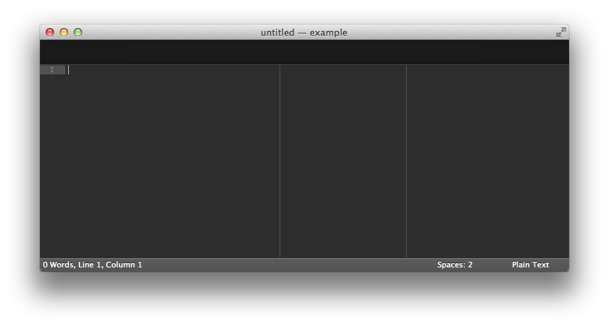

This is a quick guide to how I post examples on bl.ocks.org. This is not the only way to do it — for example, you can use GitHub Gist directly. But I find this approach convenient because it allows you to preview locally and publish with git, without futzing with a clunky interface to copy files.
Do you have Node installed already? If not, I recommend using Homebrew:
brew install nodeYou’ll also need a local web server for previewing your code because web browsers don’t like to run code out of your local file system. I prefer http-server:
npm install -g http-serverIf this is your first time using Node, you may need to edit your PATH so that you can run programs installed by NPM, Node’s package manager. I do this by editing /etc/paths, like so:
/usr/local/share/npm/bin
/usr/local/bin
/usr/bin
/bin
/usr/sbin
/sbinThis file is normally hidden, so you won’t be able to open it using File > Open. You can, however, open it from the terminal. For example, using Sublime Text:
subl /etc/pathsIf you don’t already have the subl alias for launching Sublime Text from the terminal, you can create it like so:
ln -s '/Applications/Sublime Text 2.app/Contents/SharedSupport/bin/subl' /usr/local/bin/sublOnce you’ve made your changes and saved, close and reopen the terminal to pick up the new PATH.
In the terminal, make a new folder for your example, and then cd into that folder.
mkdir example cd example
Next we’ll make an empty file in this directory for our example code, and then open the entire folder in Sublime Text.
touch index.html subl .
If we want to create another file for example — such as a README or Makefile — we can just use ⌘N to create a new file, and ⌘S to save, and it will automatically save it to the right place. In Sublime Text, you should now see an empty window:

Go to File (⌘T) and start typing "index.html". As soon as index.html highlighted, you can stop typing and hit return to open the empty file. Paste in the following contents, and then save (⌘S):
<!DOCTYPE html>
<meta charset="utf-8">
Hello, world!Back in the terminal, fire up the web server so that we can preview your shiny new example:
http-server &
Now you can visit localhost:8080 in your browser and refresh whenever you make changes. Iterate as many times as you like to develop your example, bouncing between your editor and browser.
We’ll use gistup to create the gist from the terminal. Install it via NPM:
npm install -g gistupTo create the gist from the files in the current directory:
gistupIf you want to be fancy, you can even give your gist a description:
gistup -m 'Hello World'When gistup completes successfully, it will open the created gist in your web browser. Running gistup for the first time requires creating a personal access token so that you can post to the GitHub API from the terminal; it also requires setting up SSH keys so that you can git push. If you have problems with either of these steps, check the gistup troubleshooting guide.
Now that you’ve made a gist, you can view it live on bl.ocks.org! Simply copy your gist number and replace the URL. For example:
https://gist.github.com/mbostock/9360565
Becomes:
http://bl.ocks.org/mbostock/9360565
You can also install the bl.ocks.org browser extension, which will insert a convenient button on the GitHub Gist page to take you to the corresponding block.
Need to make any changes after you publish? As before, make your changes locally and preview them in your web browser using your localhost web server. Once you’re happy with the changes, commit them using git, and push them to GitHub to republish:
git commit -am 'Made some changes.' git push
Because bl.ocks.org caches, you may need to wait up to five minutes to see your changes propagate. Or you can visit a specific revision immediately by appending it to the URL (e.g.).
One final tip: if you add a 230×120 thumbnail.png to your gist, bl.ocks.org will display it on your user page.